Ik heb voor de case study gekozen voor het onderwerp 'Netwerken' omdat ik tijdens mijn stageperiode hier heel veel over gezien heb. Suez heeft over heel België, Nederland en Duitsland switches staan, ik heb tijdens mijn tweede stagedag (4 oktober 2018) een tabel mogen maken in excel met de hoeveelheid switches die er op elke locatie aanwezig waren. Ik moest ook bepaalde formules proberen schrijven om verschillende dingen te berekenen, bijvoorbeeld hoe zwaar een bepaalde locatie door weegde op basis van het aantal switches. De excel file bestaat uit 4 verschillende werkbladen, 1 voor elk land en dan nog een vierde werkblad waarop het algemene totaal voor alle landen nog eens wordt weergegeven. Ik heb in excel ook kennis gemaakt met nieuwe termen zoals conditional formatting. Ze hebben per land meer dan 60 switches, op meer dan 100 verschillende locaties in totaal. Op donderdag 4 oktober was een van de opdrachten op mijn stage het netwerk van het bedrijf visueel voorstellen. Hierbij ben ik veel onbekende termen tegengekomen zoals MPLS. MPLS is eigenlijk een toestel dat in verbinding staat met verschillende 'sites' van het bedrijf de MPLS wordt gebruikt om datapakketten door te sturen over het netwerk. Het bedrijf werkt ook met een software genaamd Citrix. Citrix maakt het mogelijk mensen van bijvoorbeeld Nederland te laten werken op een computer die in het datacenter in Beerse draait. De Citrix Presentation server geeft alleen de beeldveranderingen door aan de gebruikerszijde en aan de gebruikerszijde worden muis- en toetsenbordinformatie doorgegeven richting de server. De visuele voorstelling mocht ik maken met een nieuwe software, die heel hard lijkt op draw.io. De software "Visio" is een software ontwikkeld door Microsoft. Op de tekeningen zou ik voor mijn case study verschillende situaties willen voorstellen en uitleggen hoe de verschillende data door het netwerk loopt.
De corporate data zal voor PC 1 lopen van de access switch via de remote firewall naar de MPLS router, zo naar de MPLS en hierna van de core switch naar de gewenste server gaan. De internet data zal volgens de access switch door de remote Firewall gaan en zo via de router naar het Internet geleid worden. Voor PC 2 zal de corporate data via de access switch geleid worden naar de remote Fortinet firewall en via deze firewall naar de volgende Central Fortinet firewall geleid worden door een private Site to Site IPSEC VPN tunnel. Deze VPN tunnel gaat wel over het internet maar is encrypted waardoor er niemand buiten het bedrijf aan de data kan. Zo zal de data verder verstuurt worden naar de juiste server. De internet data zal gewoon via de access switch gaan en dan van de remote firewall naar de router van het Internet geleid worden.
De corporate data van PC 1 zal via de access switch geleid worden naar de Fortinet Firewall omdat hij niet langs de MPLS kan gaan sinds deze down is. De data zal door een VPN tunnel moeten gaan die van remote Firewall naar central Firewall loopt, over internet. Eens de data aankomt bij de central Firewall wordt hij verder geleid naar de core switch die zo naar de gewenste server gaat. De internet data kan nog steeds via de firewall rechtstreeks naar het internet geleid worden. Voor de corporate data van PC 2 is deze situatie niet echt van toepassing omdat er geen MPLS aanwezig is. De internet data wordt op dezelfde manier verstuurd als bij de vorige situatie.
Voor PC 1 zal de corporate data net zoals bij situatie 1 gewoon via de MPLS de weg afleggen naar de server. De internet data zal naar de access switch gaan, zo naar de remote fortinet firewall, deze firewall zal dan de data sturen naar waar het moet. In dit geval zal het terug langs de access switch gaan, zo naar de router en dan naar de MPLS. De MPLS stuurt de data door naar de core switch en dan naar de gewenste server en zo naar het internet. De data van PC2 kan niet verstuurd worden als het internet down is.
Na lang nadenken en zoeken voor een project heb ik er één gevonden dat me echt interesseert. Ik ben al een tijdje aan het denken om mezelf een Amazon Echo aan te schaffen. Dit is een toestel dat met spraak bestuurd kan worden en op commando muziek kan beginnen afspelen, de lichten bedienen en nog veel meer. Na even te zoeken naar projecten met arduino’s en Raspberry Pi’s kwam ik terecht op een project genaamd: “The Simplest Way to Build A Raspberry Pi-Powered Amazon Echo”. te bekijken wou ik er meteen aan beginnen.
Ik zal eerst wel wat onderdelen moeten kopen maar sinds de prijs van deze onderdelen veel lager liggen dan de prijs van een echte amazon echo is dit zeker niet erg. De onderdelen die ik nodig zal hebben zijn: een Raspberry Pi 2, een wifi adapter voor deze Raspberry Pi, een 8GB mini sd kaart, een USB microfoon en een speaker.
Bij de tutorial wordt gebruik gemaakt van een github project genaamd Alexa Pi. Ik heb spijtig genoeg nog niet veel kunnen doen sinds ik de onderdelen die ik nodig heb voor het project nog niet heb. De stappen waar ik niet echt onderdelen voor nodig heb zoals het aanmaken van een Amazon Developer Account heb ik al wel voltooid. Maandag ga ik alle onderdelen kopen zodat ik zo snel mogelijk aan het project kan starten. Dit zal voor mij de eerste keer zijn dat ik met een Raspberry Pi werk, dus ik ben wel benieuwd. De eerstvolgende stap voor mij is het aanmaken van een nieuw product op het Amazon Developer Account. Hierbij maak ik een nieuw profiel aan voor mijn Alexa-Pi. Spijtig genoeg kan ik dit pas doen als ik mijn Raspberry Pi heb omdat ik hiervan het IP nodig heb. Na deze stap kan ik echt te werk gaan door Raspbian te downloaden, het OS van de Raspberry Pi. Hierna kan ik met het terminal de nodige scripts uitvoeren en na het runnen van deze script en het beantwoorden van een aantal vragen zou het toestel moeten werken.
Ik was begonnen aan het project met een tutorial dat ik gevonden had op YouTube: Link. In deze tutorial werd heel duidelijk uitgelegd hoe ik raspbian op de Raspberry Pi moest zetten en hoe ik Raspberry Pi moest configureren Tutorial. Ik moest eerst mijn SD kaart formatteren. Dit heb ik gedaan met een programma genaamd “SD Card Formatter”. Hierna moest ik raspbian installeren en op de SD kaart zetten.
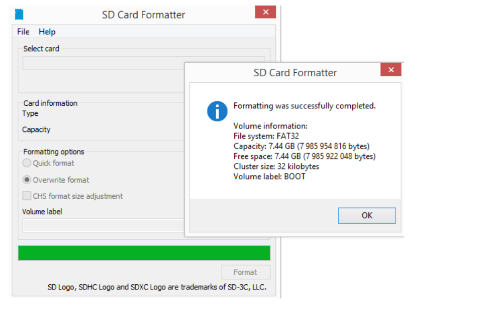 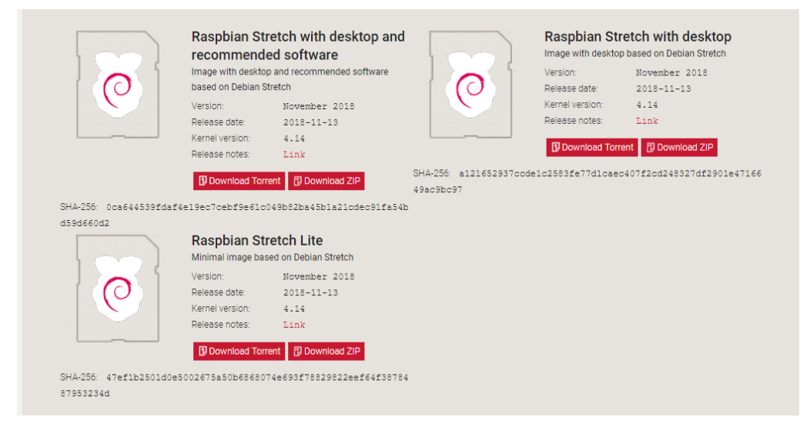Bij het installeren van raspbian heb ik eerst gekozen voor de meest uitgebreide versie. Dit OS moest ik dan met een programma genaamd etcher overzetten naar mijn Raspberry Pi. Het programma zei dan wel dat het succesvol was maar als ik de Raspberry Pi probeerde op te starten, werkte het niet. Na een tijdje proberen heb ik dus beslist om het SD kaartje nog maar eens te formatteren en de iets kleinere versie versie er op te zetten. Dit werkte perfect en ik had nu dus een werkende Raspberry Pi met Raspbian.
In de video werd gebruik gemaakt van een programma genaamd PuTTY. Dit programma kon gebruikt worden om de Raspberry Pi te linken met je gewone PC. Hierdoor zou je dus op je gewone pc een terminal kunnen openen voor je Raspberry Pi en zo alle commands uitvoeren. Spijtig genoeg stootte ik hier op nog een probleem. PuTTY wou maar niet werken bij mij.
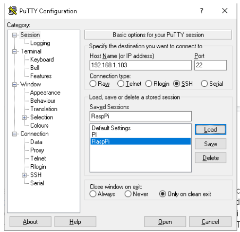 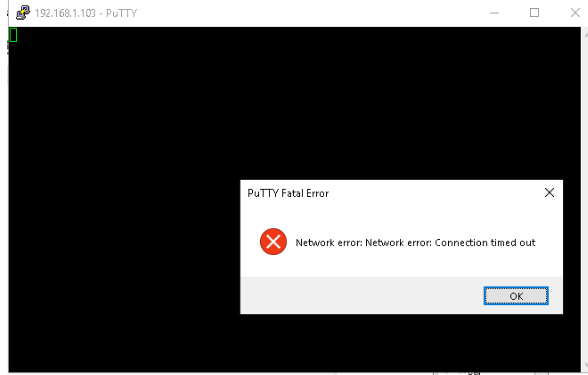Sinds ik uiteindelijk doorhad dat de vorige video al enkele jaren oud was ben ik wat verder gaan zoeken naar recentere videos. En uiteindelijk kwam ik op deze video uit. Link. Deze video was veel recenter, er werd geen gebruik gemaakt van PuTTY en hier werd ook gewerkt met een tutorial van Amazon zelf. In deze tutorial werd ook stap voor stap heel duidelijk met screenshots uitgelegd wat ik allemaal moest doen. Dus ik probeerde hiermee verder aan de slag te gaan. De eerste stap was het registreren van een Product op de Amazon Developer website. Bij de aanmaak van dit product kreeg je dan ook een eigen Client ID dat je later nodig had.
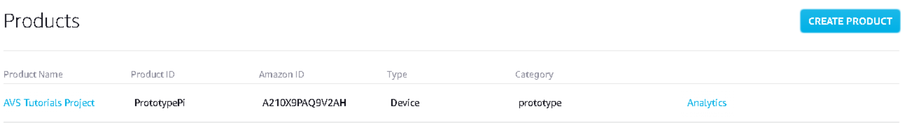 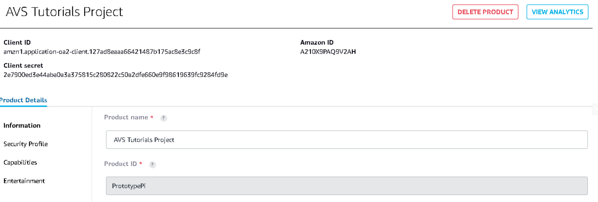Na de eerste stap moest ik volgens de tutorial mijn Raspberry Pi configureren en dus ook raspbian downloaden maar sinds ik dit al gedaan had bij de vorige video was het niet meer nodig.
Bij de tweede stap mocht ik beginnen met commando’s uit te voeren in het terminal. Met het commando: "sudo apt-get upgrade" moest ik eerst nakijken mijn OS up to date was. Sinds dit allemaal in orde was ging ik verder naar de andere commands. De volgende commando’s waren om alle nodige tools van de Software Development Kit te installeren:
wget https://raw.githubusercontent.com/alexa/avs-device-sdk/master/tools/Install/setup.sh \
wget https://raw.githubusercontent.com/alexa/avs-device-sdk/master/tools/Install/genConfig.sh \
wget https://raw.githubusercontent.com/alexa/avs-device-sdk/master/tools/Install/pi.sh
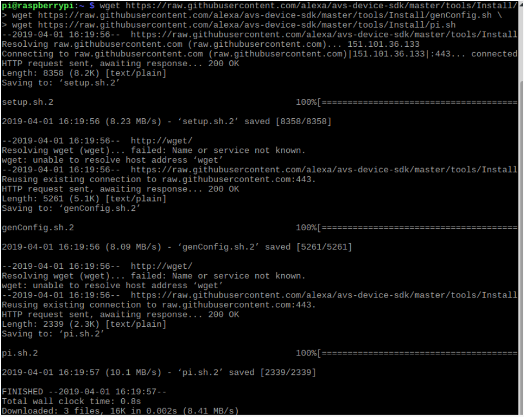Na het installeren krijgen we deze files te zien in de home folder van de Raspberry Pi. Met behulp van deze files kunnen we nu het installatie script voor Alexa toevoegen.
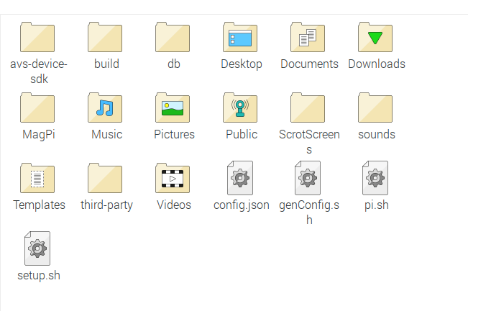We zorgen eerst dat we in de juiste folder zitten door het commando: cd /home/pi/ uit te voeren. Hierna voeren we het installatie commando uit: sudo bash setup.sh config.json [-s 1234] [-s 1234] Hierbij worden een paar vragen gesteld waarmee je akkoord moet gaan. De installatie verloopt in het begin heel vlot bij mij maar spijtig genoeg gaat er hierna weer iets fout bij mij. Ik heb de installatie al meerdere keren proberen uitvoeren maar de Raspberry Pi loopt steeds vast op 97%. Ik heb zelfs al geprobeerd de SD card opnieuw te formatteren en raspbian opnieuw te installeren en elke stap vanaf het begin opnieuw uit te voeren. Helaas werkt de installatie nog steeds niet. Ik heb een paar mensen gevonden die hetzelfde probleem hadden maar op een ander percentage, helaas zijn de antwoorden op de problemen nogal vaag en heb ik nog steeds geen oplossing gevonden.
In de tutorial staat wel dat het vrij normaal is dat je Raspberry Pi “freezed” maar als ik mijn toestel opnieuw opstart en het commando opnieuw uitvoer loopt het op dezelfde moment opnieuw vast. Ik heb al uren gewacht om te zien of er iets gebeurd maar dit is helaas niet het geval dus ik zal nog wat verder moeten zoeken/uitproberen om tot een oplossing te komen.
Stukje uit de tutorial dat zegt dat het vrij normaal is dat de Raspberry Pi “freezed”:
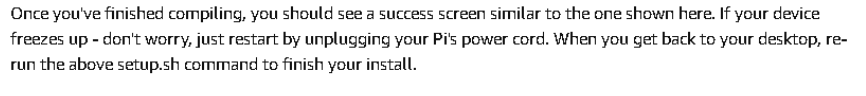Terms and agreements waarmee je akkoord moet gaan.
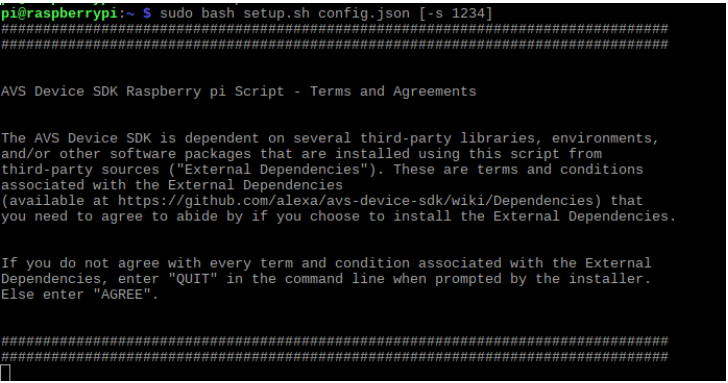Moment waarop de installatie bij mij vastloopt.
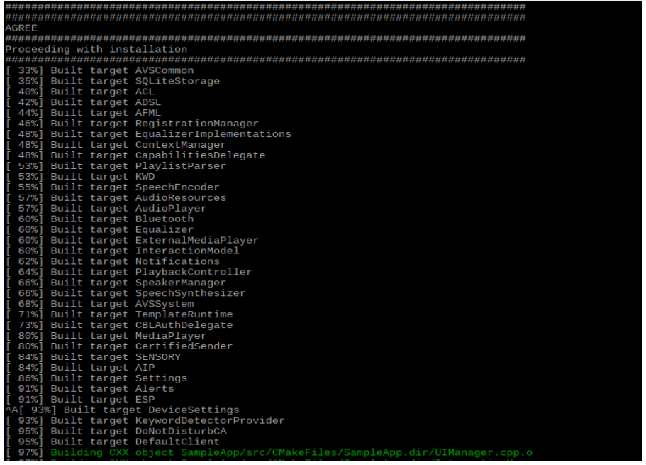Na nog een paar keer de build opnieuw te proberen werkte het nog steeds niet. Dus heb ik als laatste poging de installatie een hele nacht laten runnen. Toen ik ‘s morgens wakker werd was ik zeer gelukkig, het was eindelijk gelukt. Ik kon nu met het commando sudo bash startsample.sh eindelijk het script runnen om met Alexa te spreken. Alles liep vlekkeloos, het enige spijtige detail is dat ik geen muziek kan afspelen vanuit spotify of andere muziek software. Hiervoor heb je de commerciële versie van de amazon echo nodig, maar ik heb nog steeds de radiozenders waarnaar ik wel kan luisteren. Voor de rest is alles in orde en werkt de Alexa Pi perfect!